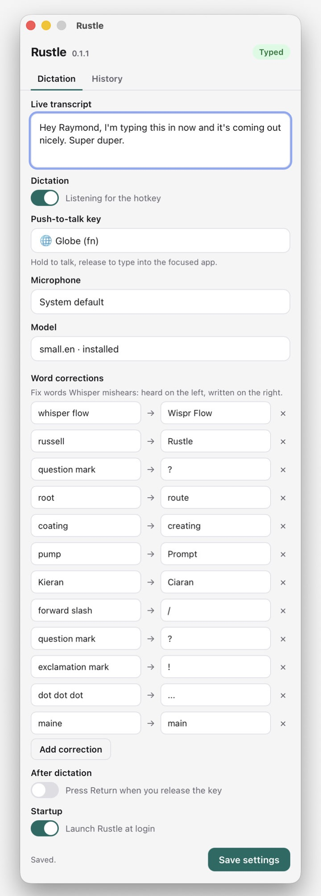

Local dictation
Whisper runs on your machine. Nothing is sent to a server. The grey bar shows what it heard; the text goes into the app you were using.
A build for this computer is not on the latest release yet. Use another file below, or run it from source.

The settings window. Words go into the app you were using, not into this panel.
Hold the push-to-talk key. The grey bar shows Listening.
Speak. Whisper transcribes on this machine.
Release. The words appear in the front app.
macOS: right-click the app and choose Open (it is not from the App Store). Grant Microphone, Input Monitoring and Accessibility, then quit and reopen.
Windows may warn about an unsigned installer.
Linux paste needs xdotool, wtype or ydotool.
Needs Rust, cmake and Node. Nothing is installed globally, and nothing has to go in /Applications.
npm install npx tauri dev